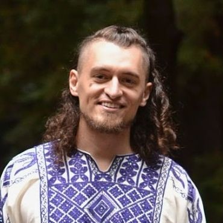

Finding your center in courtship
 Hi! I'm Malcolm Ocean. Recently I got married and friends started asking me for advice on courtship. In those conversations, I found myself not only sharing personal experiences, but also applying insights from my years of research on how to develop non-naive trust (trust that respects and integrates distrust). I want to help more people fall sanely in love, so I'm developing this online course to share the patterns & principles I've noticed.
You've done enough “dating indefinitely” and want to get real about courting.
Your current situation: you have a person with whom there’s some mutual attraction and sense of romantic possibility. You might have just met last week, or you might be years in and talking about getting married, or you might be anywhere in between.
Your desired situation: stably mated for life. A commitment that you can tell is robust. Some of what I have to say applies to a wide variety of life paths (some even applies outside of romance!) but my intended audience is someone who is potentially excited to get married and/or have kids—given the right person to do it with.
Your conundrum: is this the right person? How can I tell? Are we moving too fast? Are we hesitating because of some generic fear of commitment or because there’s something we can sense isn’t a fit—or because one of us needs information we aren't getting? Can we resolve this conflict or will it follow us forever?
These kinds of questions are what this course will help you learn to answer for yourself. I don’t have the answers—I have an approach for finding your own answers and helping your partner find theirs.
If you don’t have a current candidate person to fall in love with, but you broadly feel like you could meet that person and connect with them any day, and then you’d fit the description above, then come on in! Getting more clear on the process of falling in love (and/or on what happened in your last relationship) might help you clarify who you’re looking for as well.
If you are married or have kids, but you feel conflicted or a sense of doom, or you resonate with the above conundrum paragraph, it might still be relevant. It’s… a lot more complicated, especially if there are kids. But I can probably help you get clarity!
If you can’t figure out how to get any mutual attraction with someone you'd plausibly want to court, you have a different challenge that this course does not address. Good luck!
If you already have a life mate and it feels simple and stable and delightful, you’re good. But reach out—I’d love to interview you about what your process was like!
If you're not interested in a life partnership, or not anytime soon, then stay away—this course is designed to help you get one.
There’s a mysterious process that, when it completes, results in two people looking at each other and having a vivid shared sense of “you are my life mate” (and the shared future that implies for the two of you in particular, such as kids). I call this process a “mating dance”.
There are some common elements, such as first kisses, meeting each others' families, and clarifying a shared idea of the future. Each person needs different steps to happen in order for this to happen, and you don’t get to know them all in advance. But you can feel what matters to you, and there are signs you can look for at any given moment to tell if you’re dancing well or if you’re skipping steps or stepping on each others’ feet.
I want to help you notice your innate sense of how the dance is going, and to listen to that and refine it, so you can recenter when you get off-balance. This will ease oscillations and desperate clinging, which will move you more confidently towards both discovering “you are obviously my life mate” if that’s possible. And if it’s not possible, it will help you discover that and move on, rather than inadvertently committing anyway.
Marriage, at its best, is a deep and unshakable foundation for the rest of life. And yet... divorce rates are high (not to mention rates of "in misery together").
Is there hope?
Well, to start: marriages are not a mass-produced product that just randomly breaks down half the time. They're all homemade.
So how do you ensure the marriage you'll create is one that you'll get to love for decades?
Do you heal your attachment wounds? Develop communication skills? Get better at following through on your commitments?
Those can help. But there's something earlier. The foundation of a wholesome marriage is that shared sense of “you are obviously my life mate”. If you commit without that—due to desperation or social pressures or whatever else—you end up with one of these two problems:
Both of these are foundational issues that can only somewhat be solved by trying harder and communicating better. For how to navigate marital challenges, I recommend Passionate Marriage by David Schnarch. It talks about how to communicate what you need while acknowledging that the fate of the relationship depends on being able to resolve what's present for you, without making that into a threat. And even the healthiest marriages need this skill, because as you grow and change and learn, there will be conflicts to resolve.
But wouldn't you rather lay a solid foundation in the first place and not find yourself going uphill for years or decades straining to make it work with someone you never really got in sync with in the first place?
That's what this course is for: to give you the wisdom and confidence to navigate towards “you are obviously my life mate, and I am obviously yours” and settle for nothing less.
This is a first iteration, so we’re doing it live! I’ve coached various friends and clients through clarifying their mating dances, as individuals and as couples, and I’m going to be doing something similar here. We’ll have four weekly 2h zoom calls where I’ll rotate through different course participants, addressing your situations live on the call, helping you learn to listen to your mating dance sense. Witnessing other participants getting coached can also give you insight into your own mating dance.
Sessions will be recorded for participants who miss a session and for my reference as I go to design a future self-paced course on the topic. By signing up for this course, you’ll have lifetime access to any such course as well, or future materials I make for another cohort-based course. (Although you won’t need mating dance advice forever!)
When exactly: each Tuesday in May (7th, 14th, 21st, 28th). Two cohorts in parallel, at different times of day. One is 10am-noon, the other is 5-7pm (in Pacific time: UTC−7).
How many people? It's capped at 12 per cohort (originally 15 but I figured 12 would be better)
How much is it? $200 USD.
How do I sign up? Registration is closed for now but if you sign up for my newsletter then you'll also get to see more of my writing on the topic. Or just put your email in this form if you want to be emailed about future sessions and nothing else.
Another option is to work with me 1-on-1 (or 1-on-2, with both halves of a couple/courtship) for which you can book me here.
There aren't testimonials for the course since I haven't run it before. Having said that, here's a quote from a friend I talked to about mating dances:
Your framework just made so much sense and helped me see how I’d fallen into a place of believing I didn’t have agency to choose how my relationship was progressing. It gave me permission to see the situation I was in with fresh eyes rather than shaming myself for not being able to “make it work”
— Lawrence
And a quote from a client:
I've rarely had the opportunity to talk with someone with the combination of empathy, vulnerability, and insightfulness that Malcolm brings to his coaching sessions. Within a very small amount of time, Malcolm helped me to find a reframing of a situation in my life which has opened up a lot of space for contemplating, growth, and a feeling of new possibilities.
— coaching client, anonymous
Also here's a quote from my friend Visa that's not specific to the "falling in love" part of mating dances per se but is relevant:
I’ve had Malcolm sit in for me as a mediator in a conflict in an important personal relationship, helping me and my partner see each other’s perspectives better, trust each other better, relate to each other better, in a way that I think made a permanent positive difference. It’s not inaccurate to describe Malcolm as a “trust doctor”, and he approaches it in a very ecological way, rather than mechanically going through a checklist.
— Visakan Veerasamy
Absolutely! Let me know, if you do.
Also if you’re stoked about this approach and they aren’t, that's some evidence you’re not a fit. Not that they have to want to sign up for my course in order for it to be a good match—that'd be a silly thing to say. But if you’re like “yes! I want to do this backing up in order to stay enough” thing and they’re like “that's not how relationships work”, you may find yourself having to say “well, it seems to me that I want my relationships to work like that.”
Yes, especially if you’re looking for someone to have kids with. Mating dancing is involved in any process of getting clarity on whether to make a big commitment. If you plan to relationship anarchy your whole life then this is not the course for you.
Absolutely. I have one or two general notions about ways in which male & female mating dances tend to differ in the context of straight couples, but those are very minor points and not central to what the course is about. Again: I'm here to help you listen to your own sense of how your dance is going, not tell you how it's supposed to go or tell you specifically what you can do to attract the kinds of people you're looking for.
Of course! (within 30 days)
It's not literally "no questions asked", because I would ask you to share why it wasn't a fit so that I can learn. But whatever the reason, I don't want your money if you don't feel you got what you paid for.
Here are three pieces of my background that lead me to feel like I've got things worth saying on the topic of courtship.
I want to be very clear that while I wouldn't be putting this out if I didn't think it were valuable, I don't have a substantial track record. I can't point to successful courtships I can take credit for helping, and I've only been developing and testing these ideas for about a year, so I definitely can't take credit for any long-lived marriages. I have my own very-new happy marriage and some friends & coaching clients who I've helped get clarity at various stages. I have my mistakes that I've worked hard to learn from.